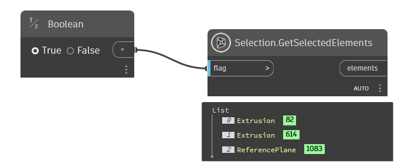
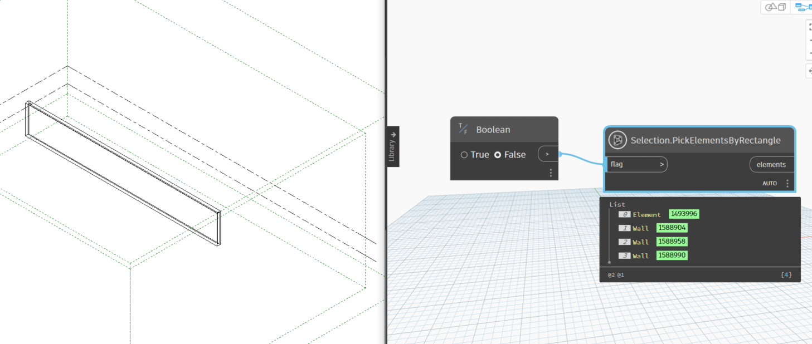
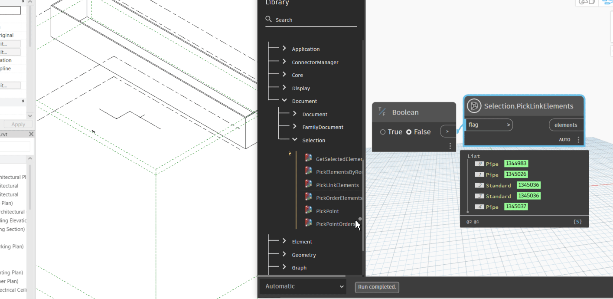
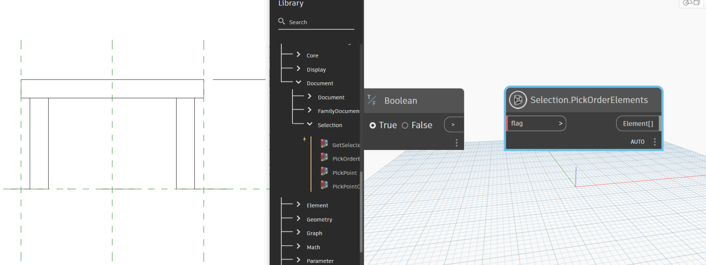
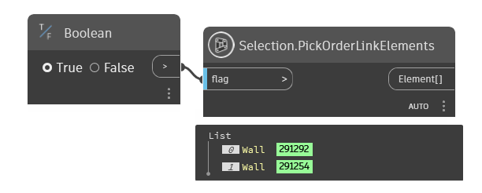
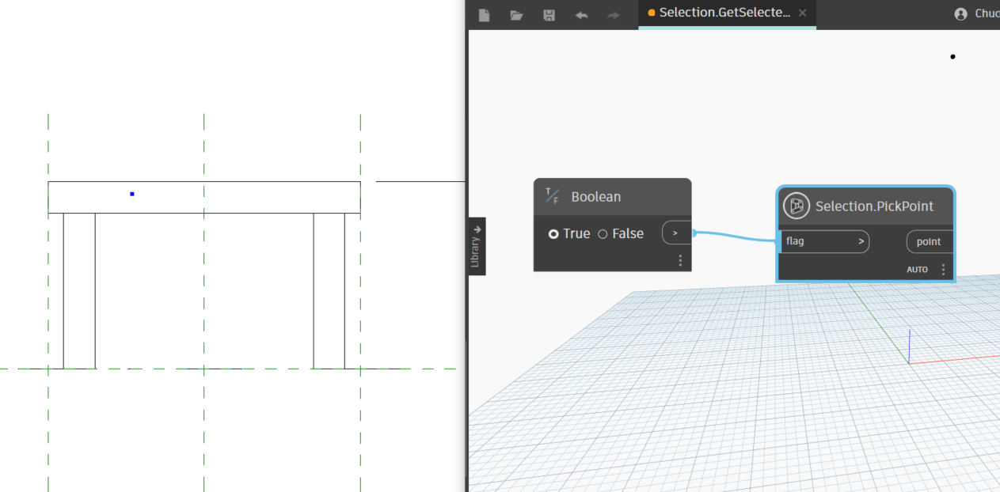
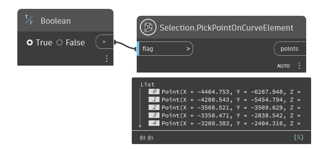
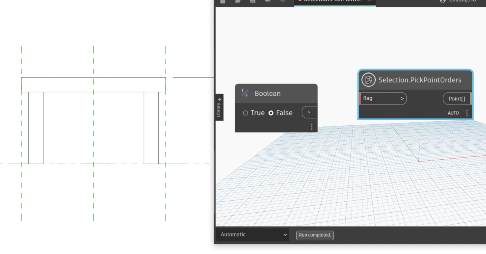
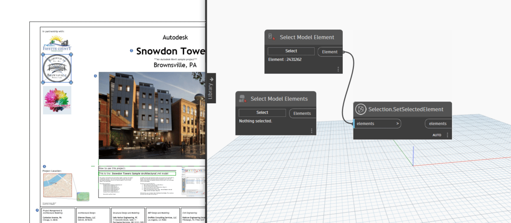
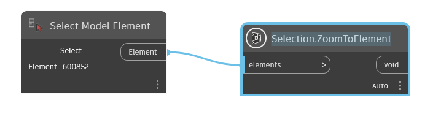

Class Selection
- Namespace
- OpenMEPRevit.Document
- Assembly
- OpenMEPRevit.dll
public class Selection- Inheritance
-
Selection
- Inherited Members
Methods
GetSelectedElements(bool)
Returns the selected elements in the current document.
[NodeCategory("Action")]
[NodeSearchTags(new string[] { "selection", "get", "selected", "elements" })]
public static List<Element> GetSelectedElements(bool flag)Parameters
flagboolflag true false to fresh
Returns
- List<Element>
element selected
Examples

Selection.GetSelectedElements.dynPickElementsByRectangle(bool)
Pick Element By Rectangle In Current View
[NodeCategory("Action")]
[NodeSearchTags(new string[] { "selection", "pick", "rectangle", "element" })]
public static List<Element> PickElementsByRectangle(bool flag)Parameters
flagbooltoggle true false to pick again
Returns
- List<Element>
list element pick by Rectangle
Examples

Selection.PickElementsByRectangle.dynPickLinkElements(bool)
Pick Element In Linked Document
[NodeCategory("Action")]
[NodeSearchTags(new string[] { "selection", "pick", "link", "element" })]
public static List<Element> PickLinkElements(bool flag)Parameters
flagboolflag true false to fresh pick element
Returns
- List<Element>
list element inside link elements
Examples

Selection.PickLinkElements.dynPickOrderElements(bool)
Pick Select Order Element In Current View
[NodeCategory("Action")]
[NodeSearchTags(new string[] { "selection", "pick", "order", "element" })]
public static List<Element> PickOrderElements(bool flag)Parameters
flagbool
Returns
- List<Element>
list element pick ordered
Examples

Selection.PickOrderElements.dynPickOrderLinkElements(bool)
Retrieves a list of linked elements from the host Revit document based on the user's selection.
public static List<Element> PickOrderLinkElements(bool flag)Parameters
flagboolA boolean flag indicating fresh the selection process.
Returns
- List<Element>
A list of Revit elements from linked documents.
Examples

Selection.PickOrderLinkElements.dynExceptions
- ArgumentException
Thrown when an error occurs during the element retrieval process.
PickPoint(bool)
Return Point Picked In Current View
[NodeCategory("Action")]
[NodeSearchTags(new string[] { "selection", "pick", "point" })]
public static Point PickPoint(bool flag)Parameters
flagbooltoggle to fresh pick point
Returns
- Point
point
Examples

Selection.PickPoint.dynPickPointOnCurveElement(bool)
Return list point pick orders on curve element (Pipe, Duct, Cable Tray, Conduit, Flex Duct, Flex Pipe, Wire)
public static List<Point> PickPointOnCurveElement(bool flag)Parameters
flagbooltoggle true false to fresh pick point
Returns
- List<Point>
list point orders picked
Examples

Selection.PickPointOnCurveElement.dynPickPointOrders(bool)
Return a list points pick order in Current View
[NodeCategory("Action")]
[NodeSearchTags(new string[] { "selection", "pick", "point", "order" })]
public static List<Point> PickPointOrders(bool flag)Parameters
flagbooltoggle true false to fresh pick point
Returns
- List<Point>
list point picked orders
Examples

Selection.PickPointOrders.dynSetSelectedElement(List<Element>)
Set selected element in Revit Project
[NodeCategory("Action")]
[NodeSearchTags(new string[] { "selection", "pick", "link", "element" })]
public static List<Element> SetSelectedElement(List<Element> elements)Parameters
elementsList<Element>list element need set selected
Returns
- List<Element>
list selected element
Examples

Selection.SetSelectedElement.dynZoomToElement(List<Element>)
Zoom to element in Revit Project
[NodeCategory("Action")]
public static void ZoomToElement(List<Element> elements)Parameters
elementsList<Element>the list element need zoom to
Examples

Selection.ZoomToElement.dynZoomToLinkElement(List<Element>, bool)
Zooms to specified elements within a Revit project.
public static void ZoomToLinkElement(List<Element> elements, bool isCropView = false)Parameters
elementsList<Element>A list of Revit elements to zoom to.
isCropViewboolSpecifies whether to use a crop view for zooming (optional, default is false).